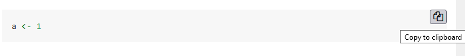

Crime by the Numbers: A Criminologist’s Guide to R
2021-12-06
1 Preface
This book introduces the programming language R and is meant for undergrads or graduate students studying criminology. R is a programming language that is well-suited to the type of work frequently done in criminology - taking messy data and turning it into useful information. While R is a useful tool for many fields of study, this book focuses on the skills criminologists should know and uses crime data for the example data sets.
For this book you should have the latest version of R installed and be running it through RStudio Desktop (The free version). We’ll get into detail on what R and RStudio are soon but please have them both installed to be able to follow along with each chapter. While you must install both, you only ever need to open RStudio. While R is the actual programming language, RStudio is program that makes it a lot easier to interact with R than opening up the R application itself.1 I highly recommend following along with the code for each lesson and then try to use the lessons learned on a data set you are interested in.
1.1 Why learn to program?
With the exception of some more advanced techniques like scraping data from websites or from PDFs, nearly everything we do here can be done through Excel, a software you’re probably more familiar with. The basic steps for research projects are generally:
- Open up a data set - which frequently comes as an Excel file!
- Change some values - misspellings or too specific categories for our purposes are very common in crime data
- Delete some values - such as states you won’t be studying
- Make some graphs
- Calculate some values - such as number of crimes per year
- Sometimes do a statistical analysis depending on the type of project
- Write up what you find
R can do all of this but why should you want (or have) to learn an entirely new skill just to do something you can already do? R is useful for two main reasons: scale and reproducibility.
1.1.1 Scale
If you do a one-off project in your career such as downloading some data and making a graph out of it, it makes sense to stick with software like Excel. The cost (in time and effort) of learning R is certainly not worth it for a single (or even several) project - even one perfectly suited for using R. R (and many programming languages more generally, such as Python) has its strength in doing something fairly simple many times. For example, it may be quicker to download one file yourself than it is to write the code in R to download that file. But when it comes to downloading hundreds of files, writing the R code becomes very quickly the better option than doing it by hand.
For most tasks you do in criminology when dealing with data you will end up doing them many times (including doing the same task in future projects). So R offers the trade-off of spending time upfront by learning the code with the benefit of that code being able to do work at a large scale with little extra work from you. Please keep in mind this trade-off - you need to front-load the costs of learning R for the rewards of making your life easier when dealing with data - when feeling discouraged about the small returns you get early in learning R.
1.1.2 Reproducibility
The second major benefit of using R over something like Excel is that R is reproducible. Every action you take is written down. This is useful when collaborating with others (including your future self) as they can look at your code and follow along what you did without you having to show them every click you made as you frequently would on Excel. Your collaborator can look at your code to help you figure out a bug in the code or to add their own code to yours.
In the research context specifically, you want to have code to give to people to ensure that your research was done correctly and there aren’t bugs in the code. Additionally, if you build a tool to, for example, interpret raw crime data from an agency and turn it into a map, being able to share the code so others can modify it for their own city saves these people a lot of time and effort.
1.2 What you will learn
For many of the lessons we will be working through real research questions and working from start to finish as you would on your own project. This involves thinking about what you want to accomplish from the data you have and what steps you need to take to reach that goal. This involves more than just knowing what code to write - it includes figuring out what your data has, whether it can answer the question you’re asking, and planning out (without writing any code yet) what you need to do when you start coding. For most lessons we’ll be using actual crime data that is commonly used in research so you’ll become acquainted to a number of important data sets.
1.2.1 Skills
There is a large range of skills in criminology research - far too large to cover in a single book. Here we will attempt to teach fundamental skills to build a solid foundation for future work. We’ll be focusing on the following skills and trying to reinforce our skills with each lesson.
- Subsetting - Taking only certain rows or columns from a data set
- Graphing
- Regular expressions - Essentially R’s “Find and Replace” function for text
- Getting data from websites (webscraping)
- Getting data from PDFs
- Mapping
- Writing documents through R
1.3 What you won’t learn
This book is not a statistics book so we will not be covering any statistical techniques. Though some data sets we handle are fairly large, this book does not discuss how to deal with Big Data. While the lessons you learn in this book can apply to larger data sets, Big Data (which I tend to define loosely as data that are too large for my computer to handle) requires special skills that are outside the realm of this book. If you do intend to deal with huge data sets I recommend you look at the R package data.table which is an excellent resource for it. While we briefly cover mapping, this book will not cover working with geographic data in detail. For a comprehensive look at geographic data please see this book. This book also will not cover any qualitative data or analysis. While qualitative research is an important part of criminology, this book only focuses on working with quantitative data. Some parts of this book may apply to dealing with qualitative data, such as PDF scraping and regular expressions, but the examples I use in those chapters still deal with quantitative data.
1.4 Simple vs Easy
In the course of this book we will cover things that are very simple. For example, we’ll take a data set (think of it like an Excel file) with crime for nearly every agency in the United States and keep only data from Colorado for a small number of years. We’ll then find out how many murders happened in Colorado each year. This is a fairly simple task - it can be expressed in two sentences. You’ll find that most of what you do is simple like this - it is quick to talk about what you are doing and the concepts are not complicated. What it isn’t is easy. To actually write the R code to do this takes knowing a number of interrelated concepts in R and several lines of code to implement each step.
While this distinction may seem minor, I think it is important for newer programmers to understand that what they are doing may be simple to talk about but hard to implement. It is easy to feel like a bad programmer because something that can be articulated in 10 seconds may take hours to do. So during times when you are working with R try to keep in mind that even though a project may be simple to articulate, it may be hard to code and that there is often very little correlation between the two.
1.5 How to read this book
This book is written so a person who has no programming experience can start with this chapter and by the end of the book be able to do a data project from start to finish. Each chapter introduces a new skill and builds on the skills introduced in previous chapters. So if you skip ahead you may miss important skills taught in the chapters you didn’t read. For someone who has no - or minimal - programming experience, I recommend reading each chapter in order. If you have more programming experience and just want to learn how to do a specific thing, feel free to skip directly to that chapter.
1.6 Practice problems
At the end of most chapters there will be a series of practice problems for you to do. Not all chapters in this book have R code as some are rather theoretical, such as covering ways to collaborate with other people, so only the chapters with R code will have practice problems. I highly recommend that you do all of the practice problems as practicing is the best way to learn how to program.
You can check your answers in Appendix A which will have the answer to each question and the code that I used. There are generally multiple ways to approach a particular problem in R - though in this book I’ll cover the approach I think is best - so your code may look different than the one I have in the Appendix A. That is totally fine, the important thing is that the answer is right.
1.7 Citing this book
If this book was useful in your research, please cite it. To cite this book, please use the below citation:
Kaplan J (2021). Crime by the Numbers: A Criminologist’s Guide to R. https://crimebythenumbers.com/.
BibTeX format:
@Manual{crimebythenumbers,
title = {Crime by the Numbers: A Criminologist's Guide to R},
author = {Jacob Kaplan},
year = {2021},
url = {https://crimebythenumbers.com/},
}1.8 How to contribute to this book
If you have any questions, suggestions (such as a topic to cover), or find any issues, please make a post on the Issues page for this book on GitHub. On this page you can create a new issue (which is basically just a post on this forum) with a title and a longer description of your issue. You’ll need a GitHub account to make a post. Posting here lets me track issues and respond to your message or alert you when the issue is closed (i.e. I’ve finished or denied the request). Issues are also public so you can see if someone has already posted something similar.
For more minor issues like typos or grammar mistakes, you can edit the book directly through its GitHub page. That’ll make an update for me to accept, which will change the book to include your edit. To do that, click the edit button at the top of the site - the button is highlighted in the below figure. You will need to make a GitHub account to make edits. When you click on that button you’ll be taken to a page that looks like a Word Doc where you can make edits. Make any edits you want and then scroll to the bottom of the page. There you can write a short (please, no more than a sentence or two) description of what you’ve done and then submit the changes for me to review.
Figure 1.1: The edit button for how to make edits of this book.
Please only use the above two methods to contribute or make suggestions about the book. Don’t email me. While it’s a bit more work for you to do it this way, since you’ll need to make a GitHub account if you don’t already have one, it helps me. I wrote this book, in part, to help my career so having evidence that people read it and are contributing to it is important to me. It’s a way to publicly measure the book’s impact.
1.9 Where to find data included in this book
To download the data used in this book please see here. Each of the files that are used in this book are available to download here. At the top of every chapter that uses one of these files I’ll say exactly which files you need to download. The best way to use this book is to follow along by downloading the data and running the code that I include in each chapter.
1.10 Where to find code included in this book
If you’re reading this book through its website you can easily copy the code by clicking on the “Copy to clipboard” option on the top right of every chunk of code. This button, shown in the image below, will copy all of the code in the chunk and you can then paste (through Control/Command+V) into R.

I’ve also made each chapter available to download as an R file that has every line of code used in each chapter available to you to run. To download the files, please go to the book’s GitHub page here. I’ve saved each chapter twice - once where it only includes the code used (in the “just_code” folder) and once where it includes the code and all of the text in the chapter (in the “code_and_text” folder). So download whichever one you want to use. The code is identical in each.
This is formally known as an “integrated development environment” or an IDE.↩︎